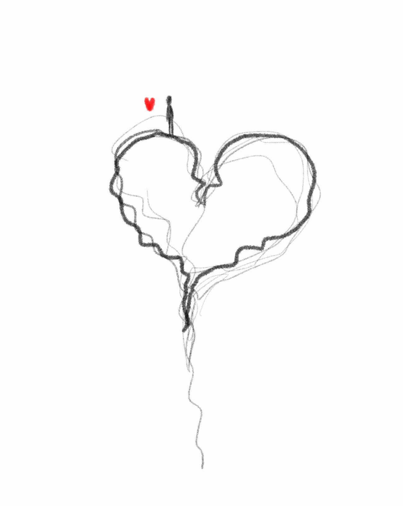

Twstd Hrts Club
We all have that moment you can hear your own heart beating. Whether it's 'cause of love, fear, desire or excitement, it's proof that we are living the moment.
Visit Us To Know More

We all have that moment you can hear your own heart beating. Whether it's 'cause of love, fear, desire or excitement, it's proof that we are living the moment.
Visit Us To Know More